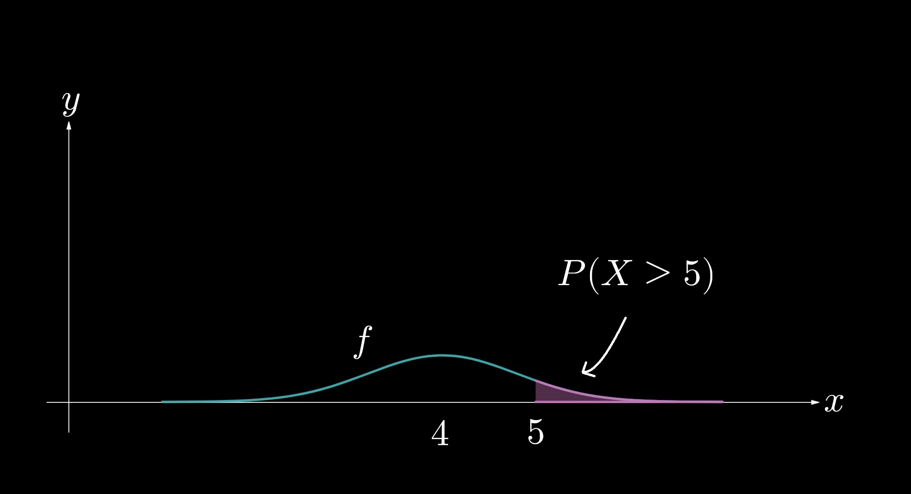
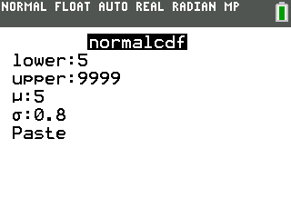
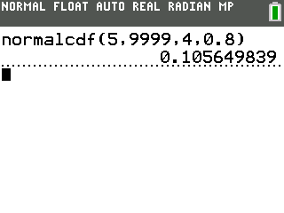

In statistics, a Normal distribution has many applications—one of which is probability modeling.
The integral of a probability density function (PDF) yields the probability of a random variable \(X\) falling between the bounds; that is,
\(\displaystyle \int_a^b f(x) \, \textrm{d} x = P(a \leq X \leq b)\), where \(f\) is a PDF.
Suppose that waiting times at the grocery store checkout lane are Normally distributed, with a mean of \(4\) minutes and a standard deviation of \(0.8\) minute.
The PDF that models this scenario is given by
\(\displaystyle f(x) = \frac{1}{0.8 \sqrt{2 \pi}} e^{-\frac{1}{2} \left(\frac{x - 4}{0.8}\right)^2} \).
What is the probability that a customer will wait in line for more than \(5\) minutes?
(Hint: Large numbers, such as \(9999\), suffice for approximations of infinity.)

FIGURE FOR PROBLEM \(33\)
Using a calculator,
$$ P(X > 5) = \int_5^\infty \frac{1}{0.8 \sqrt{2 \pi}} e^{-\frac{1}{2} \left(\frac{x - 4}{0.8}\right)^2} \, \textrm{d} x$$
$$ \approx \int_5^{9999} \frac{1}{0.8 \sqrt{2 \pi}} e^{-\frac{1}{2} \left(\frac{x - 4}{0.8}\right)^2} \, \textrm{d} x $$
$$ \approx 0.1056. $$
The customer will have a \(10.56\) percent chance, approximately, of waiting in line for longer than \(5\) minutes.
Some calculators, such as the TI-84, have built-in functions to integrate this Normal distribution
(note that \(\mu\) refers to the mean of the distribution and \(\sigma\) refers to the standard deviation.)

